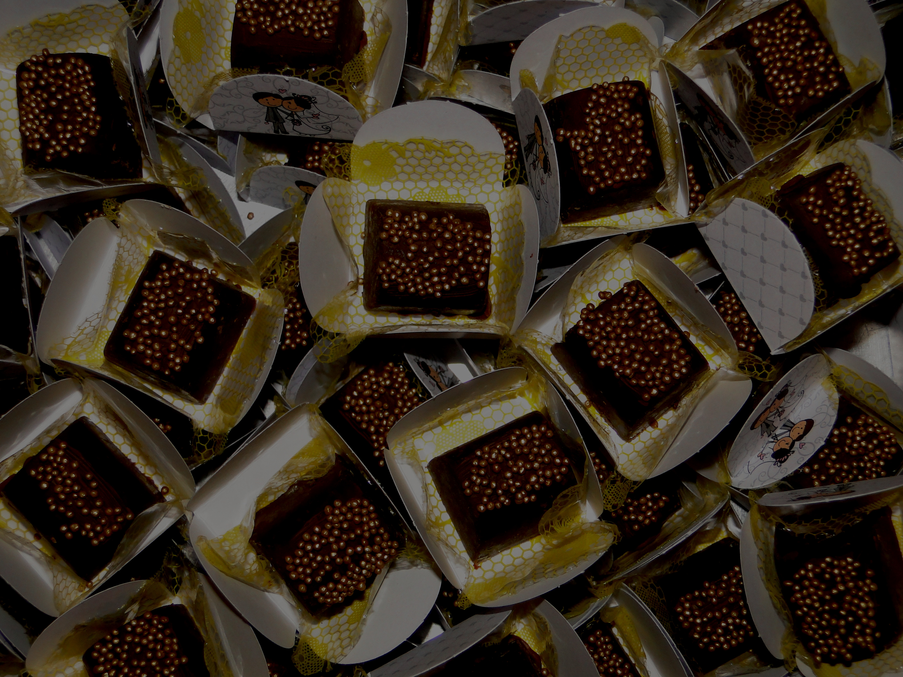
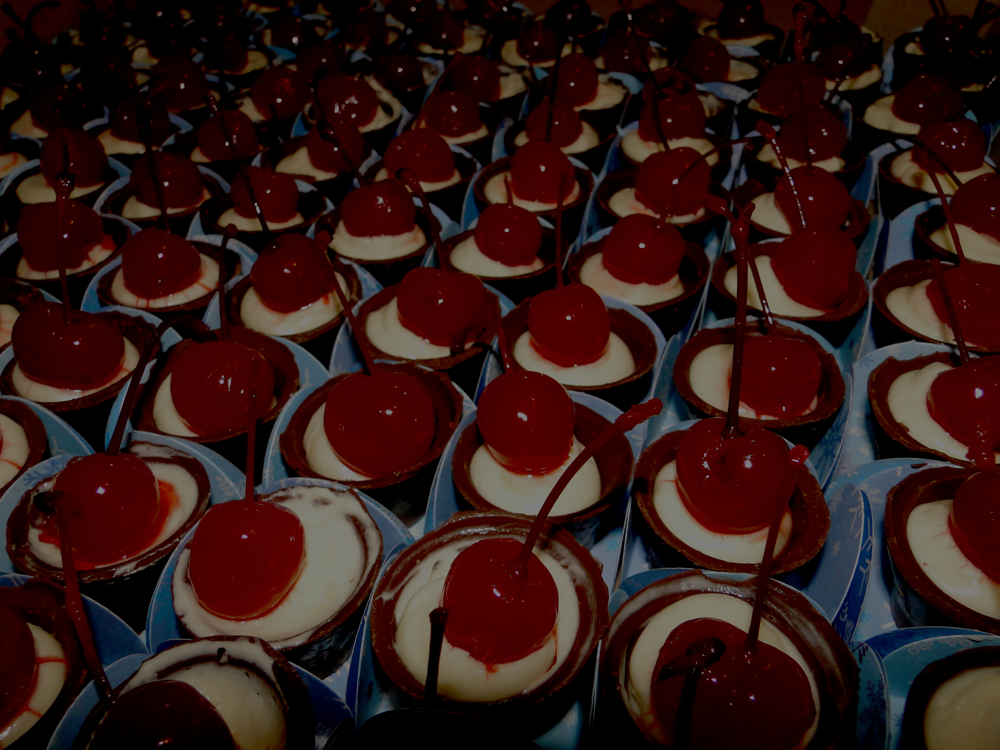
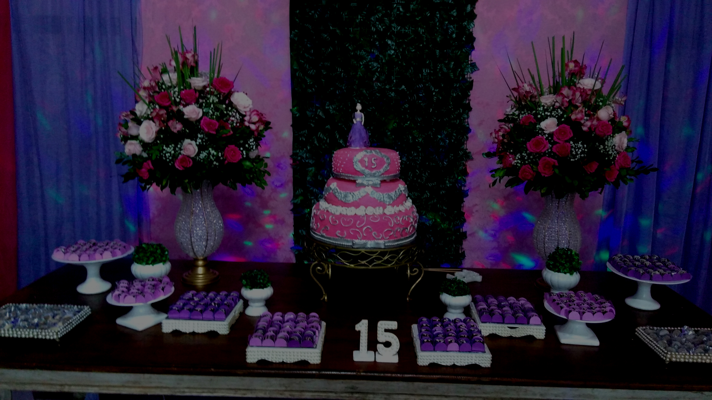

Atelier da Mercês





Cassata consists of round sponge cake moistened with fruit juices or liqueur and layered with ricotta cheese, candied peel, and a chocolate or vanilla filling similar to cannoli cream. It is covered with a shell of marzipan, pink and green pastel
A rich, sweet dessert bar. It is made from flour, brown sugar, butter, eggs, baking powder, and vanilla, and may also contain walnuts or pecans. It may contain white or dark chocolate chips and it can have a taste reminiscent of butterscotch.
One of the traditional desserts in China, it has more than 800 years of history. It was first invented in Xiagui during the Song Dynasty, then it spread far and wide. It was called "crystal cake" because its filling shines brightly, and its appearance is glittering
A kind of layered cake and a traditional dessert that is known in many countries throughout Europe and it is also a popular snack and dessert in Japan. The characteristic rings that appear when sliced resemble tree rings, and give the cake its German name
Croissants have long been a staple of Austrian and French bakeries and pâtisseries. In the late 1970s, the development of factory-made, frozen, pre-formed but unbaked dough made them into a fast food which can be freshly baked by unskilled labor.
One of the traditional desserts in China, it has more than 800 years of history. It was first invented in Xiagui during the Song Dynasty, then it spread far and wide. It was called "crystal cake" because its filling shines brightly, and its appearance is glittering
"Biscotti" is the plural form of biscotto. The word originates from the medieval Latin word biscoctus, meaning "twice-cooked." It defined oven baked goods that were baked twice, so they were very dry and could be stored for long periods of time. Such nonperishable food was
A roll is a small, often round loaf of bread served as a meal accompaniment (eaten plain or with butter). A roll can be served and eaten whole or cut transversely and dressed with filling between the two halves.
Though the origins of bagels are somewhat obscure, it is known that they were widely consumed in eastern European Jewish communities from the 17th century. The first known mention of the bagel, in 1610, was in Jewish community ordinances in Kraków, Poland.
A variant of cupcake, also called "fairy cake" for its fairy-like "wings". They can be made from any flavor of cake. The top of the fairy cake is cut off or carved out with a spoon, and cut in half. Then, butter cream, whipped cream, or other sweet
A kind of layered cake and a traditional dessert that is known in many countries throughout Europe and it is also a popular snack and dessert in Japan. The characteristic rings that appear when sliced resemble tree rings, and give the cake its German name
Bread is a staple food prepared from a dough of flour and water, usually by baking. Throughout recorded history it has been popular around the world and is one of the oldest artificial foods, having been of importance since the dawn of agriculture.
"Biscotti" is the plural form of biscotto. The word originates from the medieval Latin word biscoctus, meaning "twice-cooked." It defined oven baked goods that were baked twice, so they were very dry and could be stored for long periods of time.
A variant of cupcake, also called "fairy cake" for its fairy-like "wings". They can be made from any flavor of cake. The top of the fairy cake is cut off or carved out with a spoon, and cut in half. Then, butter cream, whipped cream
Though the origins of bagels are somewhat obscure, it is known that they were widely consumed in eastern European Jewish communities from the 17th century. The first known mention of the bagel, in 1610, was in Jewish community ordinances in Kraków
A roll is a small, often round loaf of bread served as a meal accompaniment (eaten plain or with butter). A roll can be served and eaten whole or cut transversely and dressed with filling between the two halves.
Croissants have long been a staple of Austrian and French bakeries and pâtisseries. In the late 1970s, the development of factory-made, frozen, pre-formed but unbaked dough made them into a fast food which can be freshly baked by unskilled labor.
Bread is a staple food prepared from a dough of flour and water, usually by baking. Throughout recorded history it has been popular around the world and is one of the oldest artificial foods, having been of importance since the dawn of agriculture.
"Biscotti" is the plural form of biscotto. The word originates from the medieval Latin word biscoctus, meaning "twice-cooked." It defined oven baked goods that were baked twice, so they were very dry and could be stored for long periods of time.
A roll is a small, often round loaf of bread served as a meal accompaniment (eaten plain or with butter). A roll can be served and eaten whole or cut transversely and dressed with filling between the two halves. Rolls are also commonly used to make sandwiches similar to
Though the origins of bagels are somewhat obscure, it is known that they were widely consumed in eastern European Jewish communities from the 17th century. The first known mention of the bagel, in 1610, was in Jewish community ordinances in Kraków
A variant of cupcake, also called "fairy cake" for its fairy-like "wings". They can be made from any flavor of cake. The top of the fairy cake is cut off or carved out with a spoon, and cut in half. Then, butter cream, whipped cream
Croissants have long been a staple of Austrian and French bakeries and pâtisseries. In the late 1970s, the development of factory-made, frozen, pre-formed but unbaked dough made them into a fast food which can be freshly baked by unskilled labor.
Bread is a staple food prepared from a dough of flour and water, usually by baking. Throughout recorded history it has been popular around the world and is one of the oldest artificial foods, having been of importance since the dawn of agriculture.
"Biscotti" is the plural form of biscotto. The word originates from the medieval Latin word biscoctus, meaning "twice-cooked." It defined oven baked goods that were baked twice, so they were very dry and could be stored for long periods of time.
A roll is a small, often round loaf of bread served as a meal accompaniment (eaten plain or with butter). A roll can be served and eaten whole or cut transversely and dressed with filling between the two halves. Rolls are also commonly used to make sandwiches similar to
Though the origins of bagels are somewhat obscure, it is known that they were widely consumed in eastern European Jewish communities from the 17th century. The first known mention of the bagel, in 1610, was in Jewish community ordinances in Kraków
A variant of cupcake, also called "fairy cake" for its fairy-like "wings". They can be made from any flavor of cake. The top of the fairy cake is cut off or carved out with a spoon, and cut in half. Then, butter cream, whipped cream
O Atelier da Mercês surgiu da vontade de uma chefe de cozinha mineira em expor ao mundo as delicias que aprendeu cozinhar na infância aprimoradas com a técnica que desenvolveu ao longo de anos de trabalhando. Desde então, a cidade de São João del-Rei em Minas Gerais conta com uma referência nas delícias que a a legítima mesa mineira oferece.
(32) 3373-4605
Segunda a Sexta: 8:00 - 19:00pm
Sábados 8:00 - 15:00
Av. Presidente Tancredo Neves, 663. São João del-Rei, Minas Gerais
E-Mail - email@atelier.com